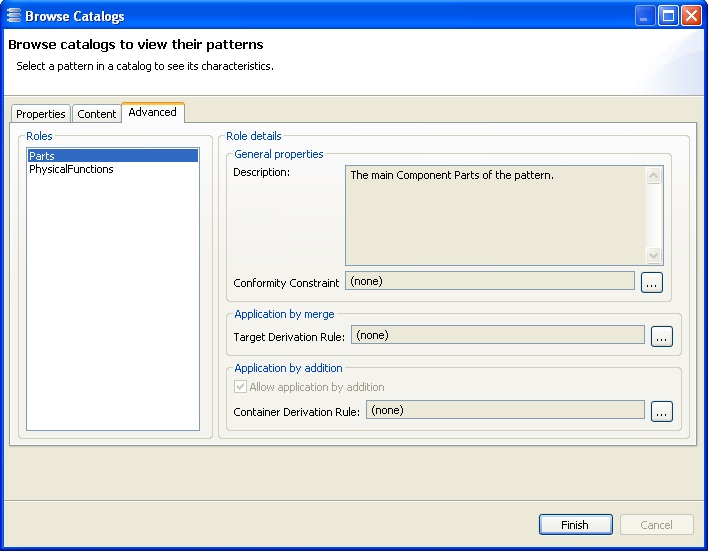

Browsing Tab 3
The properties of every role can be visualized.

Although the properties of roles cannot be modified, it is possible to open the OCL editor on existing conformity constraints or derivation rules, and experiment variants of the original OCL expression. This is safe because the modified expressions will not replace the original ones.